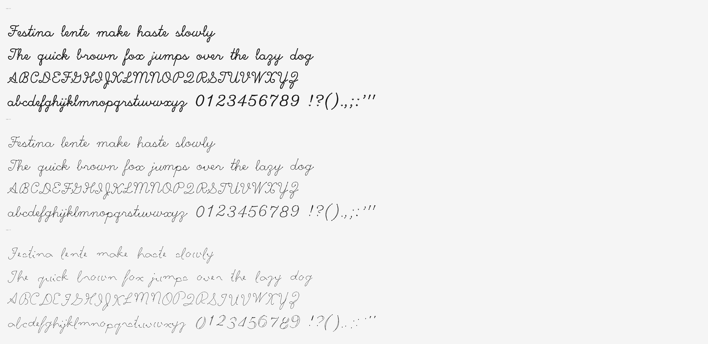

Festina lente — make haste, slowly. Every letter of this typeface was drawn by one simulated pen, three times: once with all the time in the world, once brisk, once genuinely late for something. The variable axis is the hurry.
The pad below measures the pace of your typing and stamps each letter with the haste you typed it at. Slow down and the pen slows with you — wet, thick, even strokes. Rush, and it starts cutting corners, snapping terminals, drifting off the baseline. The line remembers your hurry. It only writes forward — backspace is the one eraser.
Tap the paper and type. ASCII only — the pen learned 95 characters.
There is no “rushed version” drawn by hand. There is one pen: a point mass dragged toward a moving target by a PD controller — a spring and a damper — with an ink-flow model on top. The target walks the skeleton of each letter (the beautiful single-stroke Hershey script digitised in the 1960s), and a single parameter h ∈ [0,1] decides how much of a hurry it is in.
At h=0 the target crawls, stops dead at corners, dwells at stroke ends. The pen tracks it exactly, and a slow pen is a wet pen: thick, even ink.
At h=1 the target sprints and barely brakes. The pen lags behind and cuts corners; underdamping makes it overshoot; terminals get snapped off mid-air; speed starves the ink line thin; the baseline starts to drift — each letter leaning its own way, deterministically, so the font never changes its mind.
Every haste samples the same stroke at the same number of points, so the three masters are interpolation-compatible by construction, and the whole thing ships as one variable font with a custom HSTE axis. The renderer blends the geometry; the physics only ran three times.

Festina is free under the SIL Open Font License 1.1. Letterform skeletons derive from the Hershey fonts, created by Dr. A. V. Hershey at the U.S. National Bureau of Standards and distributed in the public-domain USENET format. Every outline here was drawn by a physically simulated pen; the HSTE axis is how much of a hurry it was in. Set it in CSS with font-variation-settings: 'HSTE' 50.